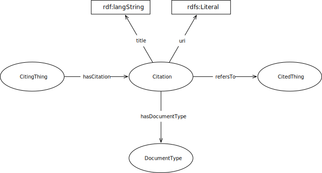

IRI: http://parliament.uk/ontologies/citation/Citation
IRI: http://parliament.uk/ontologies/citation/CitedThing
IRI: http://parliament.uk/ontologies/citation/CitingThing
IRI: http://parliament.uk/ontologies/citation/DocumentType
IRI: http://parliament.uk/ontologies/citation/hasCitation
IRI: http://parliament.uk/ontologies/citation/hasDocumentType
IRI: http://parliament.uk/ontologies/citation/refersTo
IRI: http://parliament.uk/ontologies/citation/hasUri
This HTML document was obtained by processing the OWL ontology source code through LODE, Live OWL Documentation Environment, developed by Silvio Peroni.